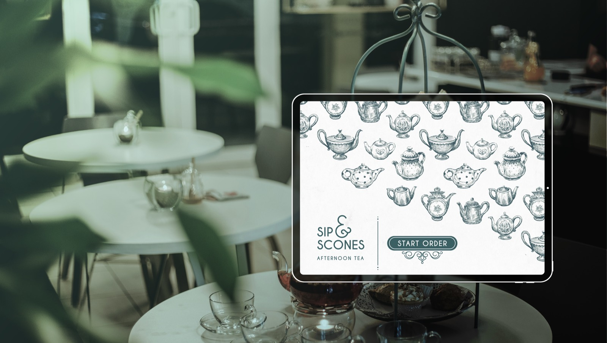
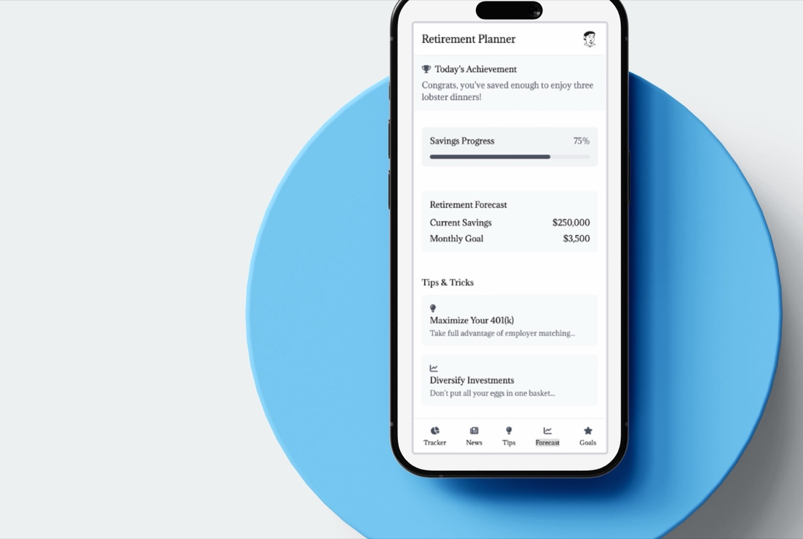

UX Design · Visual Storytelling
Swetha
Ramachandran
Design rooted in research,
refined through craft.
Selected work
Things I've
been making
A B2B SaaS platform redesign for a procurement marketplace, streamlining vendor workflows and elevating the buyer experience through research-driven UX and a refined interface system.
>>
A mobile UX design for a cozy café ordering app, crafted around delightful micro-interactions, warm visual hierarchy, and an intuitive flow from browse to checkout.
>>
A bold brand identity for a futurist consulting firm, building a visual language that bridges ambitious strategy with human imagination.
>>